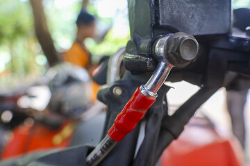
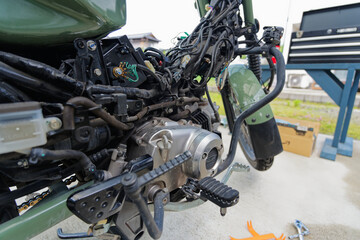
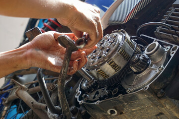
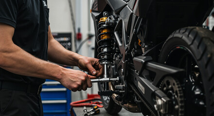
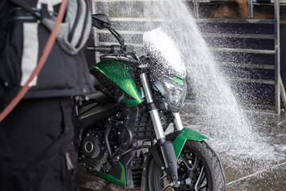
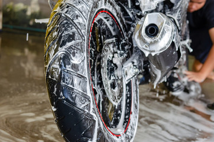

Wash and polish
Dust, grease, and dull panels cleaned into a sharp road-ready finish.
A quick look at the service space, bikes, and brand work handled at Ayya Two Wheelers Workshop.
Real workshop moments showing bikes before care and after the finishing touch.


Dust, grease, and dull panels cleaned into a sharp road-ready finish.


Brakes, oil, chain, lights, and fittings checked before delivery.


Worn parts and daily ride issues handled with practical workshop care.
Filter by brand and view service-ready bikes from the workshop gallery.
General service completed with brake and oil inspection.
Engine tune-up and chain care finished for daily riding.
Periodic maintenance with lights, tyres, and safety checks.
Repair work completed for pickup, vibration, and road readiness.
Brake service and routine checks handled before delivery.
Careful inspection, cleaning, and finishing for a steady ride.